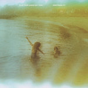

Quick Takes (February 2021)
Hello, and welcome to the first Quick Takes of the year!
You might be wondering, "Wait, what happened to the month of January?" And you'd be correct: we skipped last month because there just wasn't a lot to cover in those first few weeks. The same cannot be said for February, though, a month that had so many great releases that it was hard to pick just a few of our favorites. There's a few late January releases, so you can say that we slightly cheated. You'll notice that all of the artists we selected are positive, some more so than others, even if we didn't honor any of these with our coveted Believe the Hype branding. Nevertheless, you can't wrong with any of the picks Simon, Mark, Peter, and I chose to highlight this month. Oh, and as always, you can always reach us on Facebook, Instagram, and on our official twitter page.
...
 Black Country, New Road
Black Country, New Road
For the first time
(Ninja Tune)
Black Country, New Road follow in the steps of frequent collaborators Black Midi—they bring to the table a loud, sprawling post-punk, jittering every step of the way. The London collective are willing to indulge on sparse, echoing beauty, chilled-out groove, and shrieking ferocity, often within a single song (highlight Sunglasses covers all of this ground and a couple other spots as well). They’ve brought a contingent of horns and violins, layering onto and duelling with the base rock-band instrumentation. They haven’t ruled out the possibility of some electronic what-have-you, as the rumbling breakdown of Science Fair makes clear. Crucially, they don’t seem to have ruled much of anything out at all. As such, For the first time is usually nonsensical, frequently transcendent, and compulsively listenable. Everything that sprung to mind is on the wax here, but BC, NR don’t forget to make it catchy and groovy. In nailing that balance, they’ve given us the year’s first capital-G Great record. [8/10] Simon Sweeney
 Cassandra Jenkins
Cassandra Jenkins
An Overview on Phenomenal Nature
(Ba Da Bing!)
Listening to Cassandra Jenkins' natural, observational stories brings about the question of how much can we feel for those we don't know. Learning the tiniest minutiae of the New York singer/songwriter isn't particularly novel, though the way she presents them feels almost transcendental. Throughout her second LP, An Overview of Phenomenal Nature, Jenkins talks to bookkeepers and security guards, picks up the mail, and writes songs for her friends. There's something spectral about how these stories unfold, likely due to how winding sax lines and shimmering drones feel omnipresent to her state of reflection. Even the most heartbreaking moments like New Bikini, which references the passing of touring partner David Berman of Purple Mountains/Silver Jews fame, suggest a need for calm. It feels carefully tailored to a fault, making it practically impossible to find its flaws—especially if you find the interchangeable poetic sing-speak of Hard Drive endearing. Nevertheless, this is solipsism of the highest caliber: gentle, hypnotic, fastidious, but above all else, hard to resist. [8/10] Juan Edgardo Rodríguez
Clap Your Hands Say Yeah
New Fragility
(CYHSY)
Looking at the title of Clap Your Hands Say Yeah's latest LP, New Fragility, it might appear as if Alex Ounsworth is taking a hard look at the state of the world. And there is some truth to that: on tracks like Hesitation Nation and Thousand Oaks, the indie-rock project's mastermind is calling out the fakeries of American exceptionalism and school shootings in his usual quixotic way. We quickly learn that he conflates these examples of how the system has failed us as he candidly shares how he's failed himself. Steeped in melancholy, Ounsworth turns inward as he goes into the humiliation and despair that comes after going through a heavy divorce. His performances are impassioned, though sometimes slightly tedious, adding strings and keys over scruffy folk-rock. Ounsworth even alludes to his past brush of fame on CYHSY, 2005, though what we really get are broad, everyday depictions of the mundane. It's a beautiful song, though, reminding us of his notable talent even if he's been selling himself short for over fifteen years. [7/10] Juan Edgardo Rodríguez
 Cool Sounds
Cool Sounds
Bystander
(Nice Guys)
If Cool Sounds comes off more like the title of a boomer’s latest playlist than a Melbourne-based indie guitar band than so be it. If the songs from Bystander were shuffled in with tracks from The Velvet Underground’s Loaded, The Feelies The Good Earth, and Alex Chilton’s Feudalist Tarts, no one would be none the wiser. Led by vocalist and lead guitarist Dainis Lacey, album opener Plains has an undulating guitar line that does anything but mirror the flatness of the song’s title. The opening four tracks here are about as solid as they come, culminating in the syncopated vocals of Crimson Mask. Elsewhere on the title track and Church Bells, Lacey doesn’t let a brisker pace get in the way of a laconic delivery. Bystander makes for one hell of a varied and propulsive listen on its surface, but if you dig deeper, Lacey also has a lot on his mind in support of standing up for the marginalized. Whether you are looking to be entertained or educated, then by all means put this in your rotation post haste. [8/10] Mark Moody
 Goat Girl
Goat Girl
On All Fours
(Rough Trade Records)
On their debut LP, Goat Girl covered an impressive amount of musical ground—whether it was moody post-punk, agitated rockers, or ominous instrumental interludes. Led by guitarist/vocalist Lottie Pendlebury's raspy drawl, the South London quartet's On All Fours is by turns more sinister but with a more danceable melodic sensibility outside the edges. On Badibaba and Closing In, the band wanders less and gets locked into a groove alongside slightly askew avant-garde touches. Anxiety, mental health, and the evils of society weave through many of these tracks, though the less we know about them, the better. Something akin to the Raincoats, there's a punky, quasi-improvisational approach to their sound that embraces imagery at its most freeform. Though, as the fuller arrangements of The Crack and They Bite on You attest, Goat Girl achieves a new clarity to their dense lyrical content when their murky antics turn more accessible. [7/10] Juan Edgardo Rodríguez
 Maxïmo Park
Maxïmo Park
Nature Always Wins
(Prolifica Inc./PIAS)
Much like the British art-pop bands that started in the early 2000s, Maxïmo Park finds themselves in a strange in-between. Neither too unfairly-maligned nor ardently adored, the Newcastle band have defended their underdog status by chugging along with release after release for over twenty years. Literate-minded frontman Paul Smith gets to the bottom of this very same idea on the jangly rocker Placeholder, where he cheerily proclaims to give a relationship his best shot—even if what he may truly mean is that his band will not fade into obscurity under his watch. And, in effect, Smith and his bandmates pack Nature Always Wins with single after single—most of these genuinely some of their best since 2009's Quicken the Heart. Throughout the album, Smith taps into themes of aging, fatherhood, and the innate connections humans have with the natural world. And while many of these ideas aren't particularly sexy, especially for artists who've recently turned forty, the band wisely keeps their grand, romantic gestures in check while making them thoughtful and relatable. But if there was any doubt of Maxïmo Park's taste for winning songs, then look no further than the arena-sized ballad All of Me, where the band strikes an elegant balance between equally massive, yet musical polar opposites Europe and R.E.M. [8/10] Juan Edgardo Rodríguez
 Portrayal of Guilt
Portrayal of Guilt
We Are Always Alone
(Closed Casket Activities)
Portrayal of Guilt’s second full-length is as uncompromising as it is completely restless in its devotion to darkness. In a blitzkrieg of 9 songs in 25 minutes, the Austin, Texas band embody hardcore, black metal, grindcore, sludge metal, and everything else from music’s harshest corners, existing in their cross sections while also letting disparate influences rattle around the blender at high speed. With everything engulfed in crisp, serrated instrumentation and Matt King’s inhuman growl, Portrayal of Guilt’s songs become so chaotic and overwhelming in their bipolar brutality that almost every song needs an ambient comedown to cool off, though even these are just as lurching and ominous as each riff is impeccably tight and terrifying. [8/10] Peter Quinton
9 March, 2021 - 05:41 — No Ripcord Staff